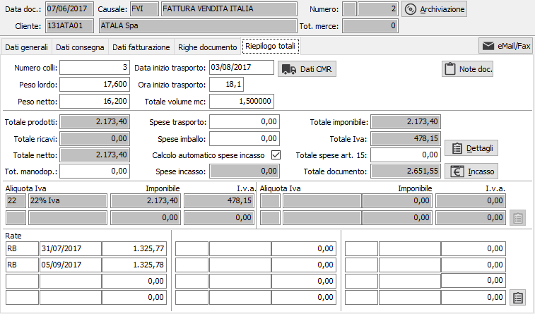
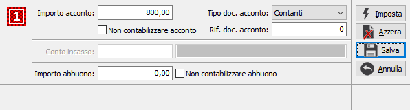
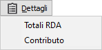
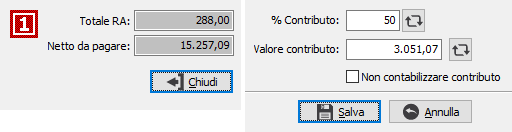
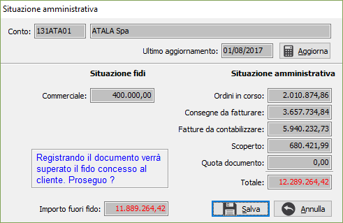

Riepilogo totali
L’ultima finestra video presenta i totali dei pesi ed i totali a valore della fattura; se la fattura è di tipo accompagnatorio (tipo fattura sulla causale) vengono visualizzati, con possibilità di modifica, i colli, i pesi ed i dati di inizio trasporto, vengono poi visualizzati l’importo dei prodotti, l’importo delle prestazioni e degli addebiti ed il totale al netto degli sconti. È consentito, prima di determinare il totale imponibile, di impostare eventuali addebiti per spese di trasporto, spese d’imballo, spese d’incasso, che è possibile far calcolare in automatico in base al cliente ed alla modalità di pagamento spuntando la relativa casella, oppure inserire manualmente e infine spese non soggette ad Iva in forza dell’art. 15 DPR 633/72. Viene visualizzato il castelletto Iva con l'indicazione dei vari imponibili, le relative aliquote ed imposte calcolate, nel caso le aliquote IVA siano più di quelle visualizzate sarà presente un pulsante per visualizzare una finestra dove saranno mostrate tutti gli imponibili e le imposte relative fino ad un massimo di dieci. Visualizza infine le scadenze calcolate in base alle modalità di pagamento applicate, con il relativo pulsante per accedere al Dettaglio scadenze. Se in configurazione base è attiva la gestione delle scadenze variabili l’utente avrà la possibilità di modificare le rate sia in termini di tipo pagamento, sia in termini di scadenza e di importi a condizione che il totale delle rate corrisponda al totale documento.
Se attiva la gestione dell'Iva sulle ristrutturazioni ed attiva la gestione anche sulla causale del documento sarà presente il valore "Totale manodopera" che viene calcolato in fase di chiusura del documento (se visibile è presente sotto al totale merce netto) con possibilità di modifica; utilizzando questo valore vengono calcolati i totali del castelletto Iva.

NUMERO COLLI: Indica il numero totali dei colli presenti nel documento.
PESO LORDO: Indica il peso lordo totale relativo ai prodotti inseriti nel documento.
PESO NETTO: Indica il peso netto totale relativo ai prodotti inseriti nel documento.
DATA E ORA INIZIO TRASPORTO: Sono i campi relativi all'inizio del trasporto, dove va indicata la data e l'ora relativa; se la causale lo prevede, i valori sono proposti in automatico dal programma.
TOTALE VOLUME MC: Indica il totale del volume in metri cubi relativo ai prodotti inseriti nel documento.
Se configurata l'opzione per gestire la lettera di vettura (CMR) sarà presente il relativo pulsante .
SPESE TRASPORTO: campo numerico per l’eventuale inserimento di addebiti per spese di trasporto soggette ad Iva proporzionalmente alle aliquote presenti o ad aliquota fissa a seconda di quanto specificato in configurazione.
SPESE IMBALLO: campo numerico per l’eventuale inserimento di addebiti per spese di imballo soggette ad Iva proporzionalmente alle aliquote presenti o ad aliquota fissa a seconda di quanto specificato in configurazione.
SPESE INCASSO: campo numerico per l’eventuale inserimento di addebiti per spese di incasso soggette ad Iva proporzionalmente alle aliquote presenti o ad aliquota fissa a seconda di quanto specificato in configurazione.
TOTALE SPESE ART 15: campo numerico per l’eventuale inserimento di addebiti per anticipazioni in nome e per conto non imponibili in base all’art. 15 DPR 633.

PULSANTE INCASSO: Il pulsante Incasso consente di inserire dati relativi ad eventuali acconto
e/o abbuoni, premendo il pulsante compare la finestra di inserimento dei
dati. In questa finestra è possibile inserire l'importo dell'eventuale
acconto, il tipo di documento con cui l'acconto viene pagato, selezionando
tra contanti, assegno bancario oppure assegno circolare; nel caso di assegno
è possibile inserire il numero dell'assegno stesso nel campo 'Rif. documento
acconto'. È possibile inserire l'importo dell'eventuale abbuono nel campo
'Importo abbuono'. Sono disponibili due caselle da spuntare per non effettuare
la contabilizzazione dell'acconto e dell'abbuono. In base alla configurazione
dell'applicazione può essere presente anche il sottoconto per l'incasso.
Il pulsante Imposta reinizializza i valori riportando il totale documento
sull'importo acconto, il pulsante Azzera chiude la finestra azzerando
tutti i valori, il pulsante Salva chiude la finestra salvando i valori
presenti ed il pulsante Annulla chiude la finestra ripristinando i valori
originali.
ad eventuali acconto
e/o abbuoni, premendo il pulsante compare la finestra di inserimento dei
dati. In questa finestra è possibile inserire l'importo dell'eventuale
acconto, il tipo di documento con cui l'acconto viene pagato, selezionando
tra contanti, assegno bancario oppure assegno circolare; nel caso di assegno
è possibile inserire il numero dell'assegno stesso nel campo 'Rif. documento
acconto'. È possibile inserire l'importo dell'eventuale abbuono nel campo
'Importo abbuono'. Sono disponibili due caselle da spuntare per non effettuare
la contabilizzazione dell'acconto e dell'abbuono. In base alla configurazione
dell'applicazione può essere presente anche il sottoconto per l'incasso.
Il pulsante Imposta reinizializza i valori riportando il totale documento
sull'importo acconto, il pulsante Azzera chiude la finestra azzerando
tutti i valori, il pulsante Salva chiude la finestra salvando i valori
presenti ed il pulsante Annulla chiude la finestra ripristinando i valori
originali.
NOTE DOCUMENTO: bottone che abilita un campo annotazioni, relative al documento attivo, che verranno stampate sulla fattura.


Il pulsante Dettagli accede ad un menù che consente di mostrare i totali ritenute di acconto calcolati se il cliente gestisce le ritenute e sono presenti nel documento prodotti su cui si applicano le ritenute; se il cliente gestisce l'applicazione di un contributo, nel menù è presente anche la voce Contributo tramite cui accedere alla finestra relativa; da questa finestra è possibile modificare o aggiornare, tramite il pulsante accanto al valore, il valore del contributo calcolato in base alle informazione presente sui prodotti; è possibile anche inserire una percentuale, applicata al totale documento, e con il pulsante accanto aggiornare il valore; in fase di inserimento o variazione, con righe modificate, se il campo viene modificato e prima del salvataggio si esce dalla pagina del riepilogo totali il dato sarà ricalcolato e la modifica manuale andrà perduta. Il valore del contributo viene conteggiato come totale pagato assieme all’acconto e le rate generate saranno di conseguenza nette del contributo, se la casella "Non contabilizzare contributo" è spuntata il contributo non sarà decurtato dal totale e non sarà contabilizzato.
RATA – TIPO PAGAMENTO: campi per contenere codici di Tipi pagamento da applicare a ciascuna delle rate. Sul campo sono attive le funzioni di ricerca (F9).
RATA – DATA SCADENZA: campi data per contenere le date di scadenza relative a ciascuna rata.
RATA – IMPORTO: campi numerici per contenere gli importi di ciascuna delle rate.
Al termine dell'inserimento dei dati, quando viene premuto il tasto F10 oppure il pulsante Salva nella tool bar compare, se configurato, la finestra di conferma della registrazione.
In fase di inserimento, al termine della registrazione, viene richiesto se si deve effettuare la stampa diretta del documento.
Se il cliente risulta fuori fido e sulla causale è spuntata la casella 'Controllo rischio', prima del salvataggio compare la seguente finestra.

In questa finestra vengono riportati i dati amministrativi relativi al cliente e richiesto se proseguire con la registrazione, indicando che il cliente supererà il fido concesso e l'importo di superamento del fido. La pressione del pulsante Aggiorna, se abilitato in configurazione, effettua il ricalcolo immediato dei valori di saldo, la pressione sul pulsante Salva determina il proseguimento delle operazioni, il pulsante Annulla riporta sulla sezione di riepilogo del documento senza proseguire.